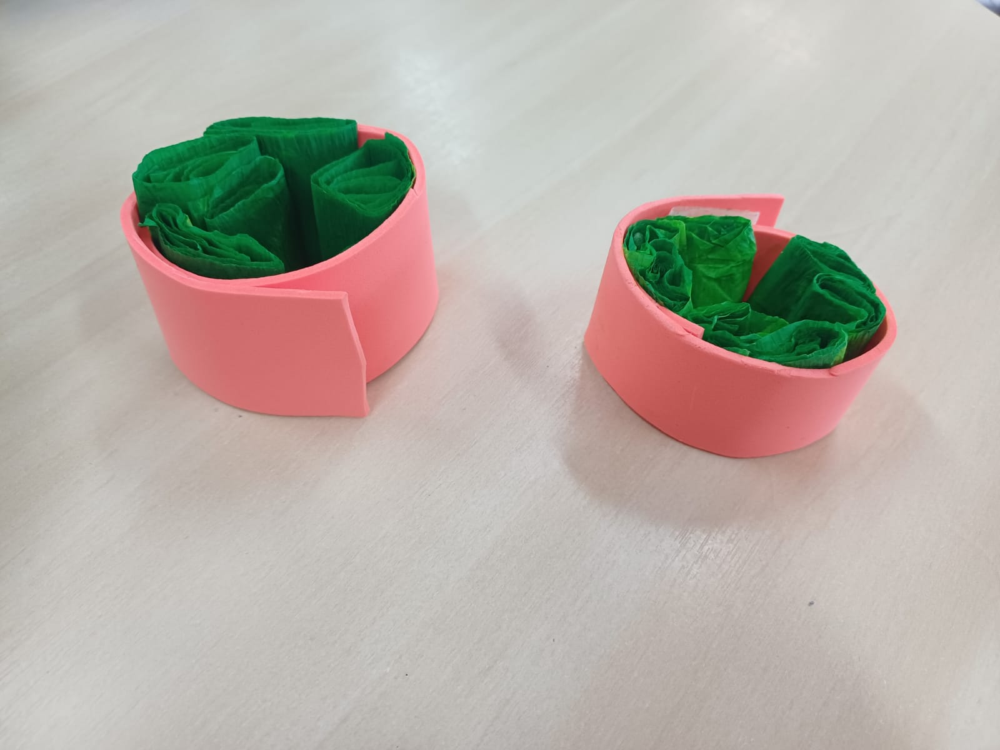

foto da célula vegetal
Apesar de possuírem várias estruturas em comum, as células vegetais e animais apresentam algumas diferenças importantes. A célula vegetal possui parede celular, plastídios e, geralmente, um grande vacúolo central. Já a célula animal não possui parede celular nem cloroplastos. Ambas apresentam núcleo, membrana plasmática, mitocôndrias, ribossomos e outras estruturas essenciais. Também é importante lembrar que nem todas as células vegetais possuem cloroplastos. As células das raízes, por exemplo, geralmente não realizam fotossíntese.
foto do núcleo
O núcleo funciona como um centro de controle das atividades celulares. Nele fica armazenada a maior parte do DNA, que contém as informações genéticas necessárias para o funcionamento e o desenvolvimento da célula.
foto do cloroplasto
Os cloroplastos são responsáveis pela fotossíntese. Eles possuem clorofila, um pigmento verde que absorve a luz solar. Durante esse processo, a planta utiliza água e gás carbônico para produzir açúcares e libera oxigênio.
foto do mitôcondria
As mitocôndrias participam da respiração celular, processo que permite obter energia dos nutrientes. Essa energia é utilizada em diversas atividades, como o crescimento e a manutenção da célula.
foto do vacúolo
O vacúolo central é um compartimento que pode ocupar grande parte do interior da célula vegetal. Ele armazena água e outras substâncias e ajuda a manter a pressão interna da célula, contribuindo para que a planta permaneça firme.
foto dos ribossomos
Os ribossomos são responsáveis pela produção de proteínas, moléculas essenciais para a estrutura e o funcionamento dos seres vivos. Eles podem estar livres no citoplasma ou ligados ao retículo endoplasmático rugoso.
foto do retículo
O retículo endoplasmático é uma rede de membranas que participa da produção e do processamento de substâncias. O tipo rugoso está relacionado à produção de proteínas, enquanto o liso atua principalmente na produção de lipídios.
foto do complexo golgiense
O complexo golgiense modifica, organiza e empacota substâncias produzidas pela célula, encaminhando-as para diferentes destinos. Nas plantas, ele também participa da produção de componentes da parede celular.
foto dos peroxissomos
Os peroxissomos participam de reações químicas importantes para a célula, como a degradação de determinadas moléculas. Também ajudam a neutralizar o excesso de peróxido de hidrogênio, que pode ser prejudicial quando se acumula.